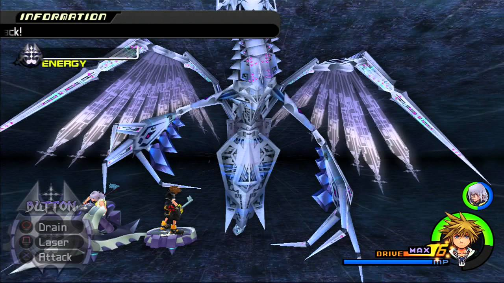
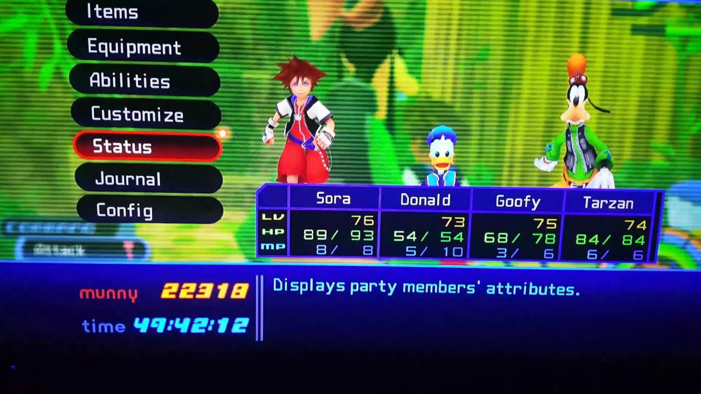
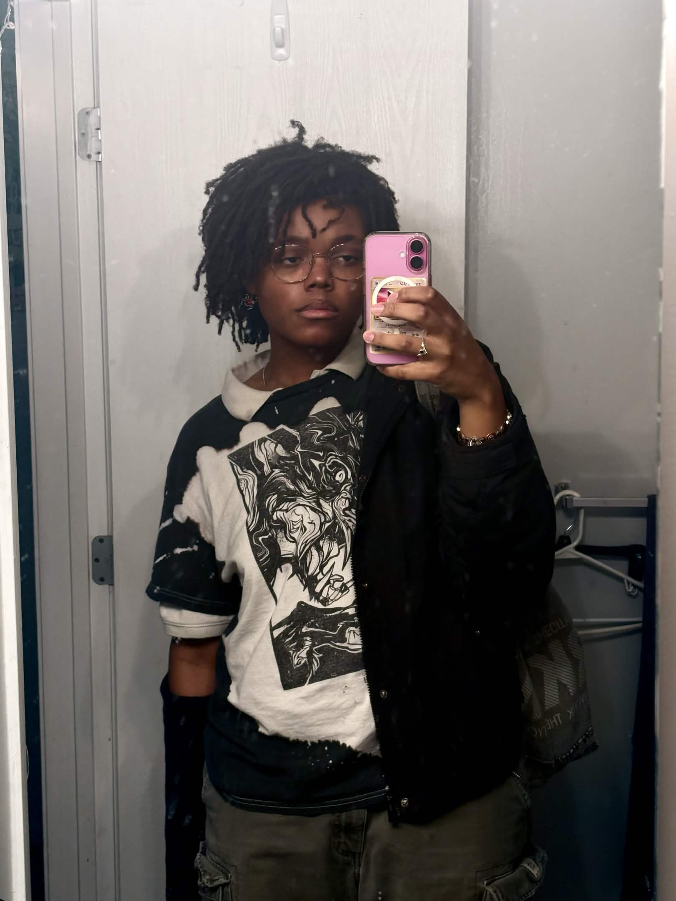
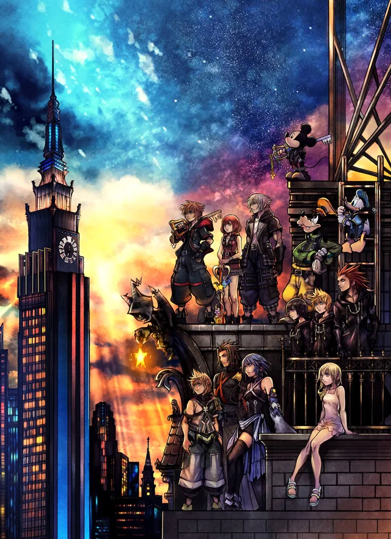
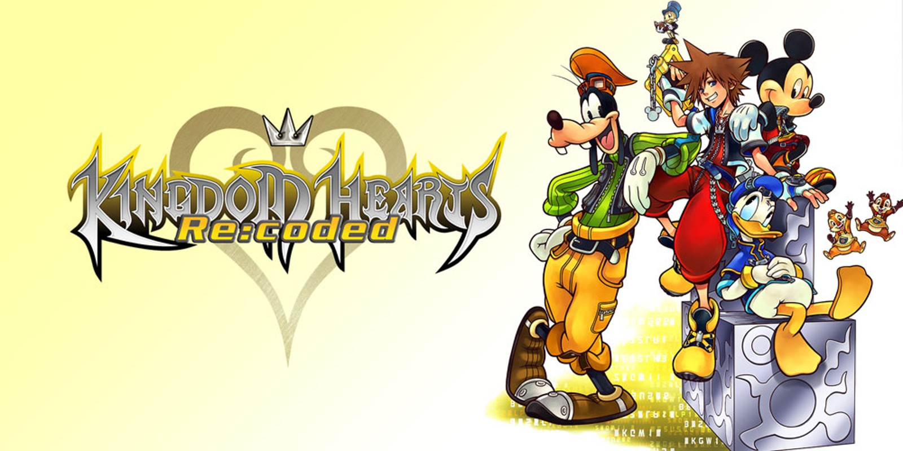
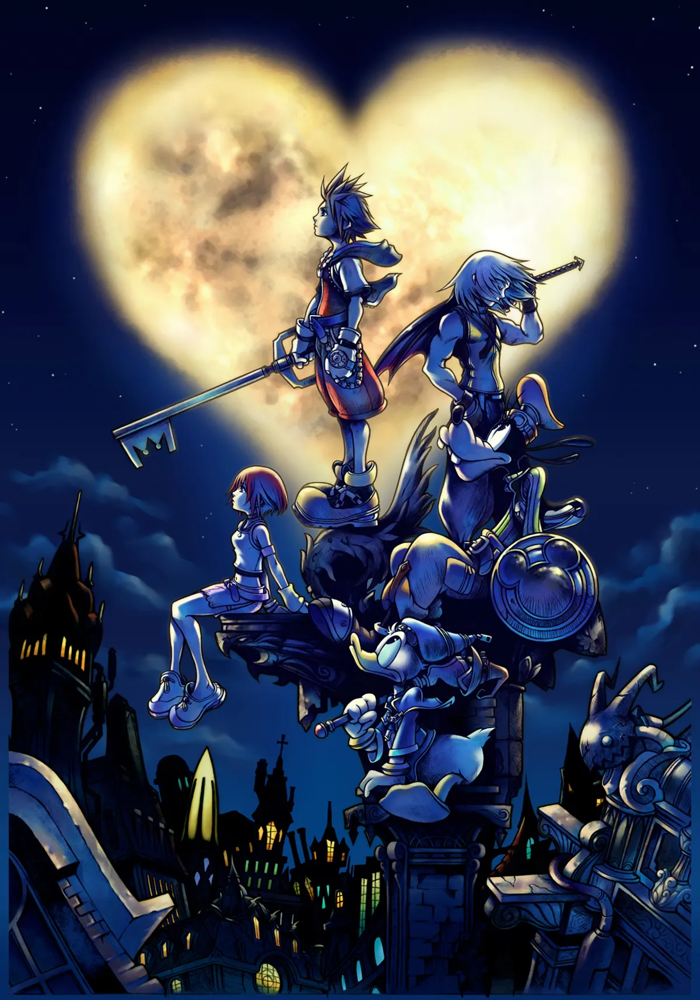
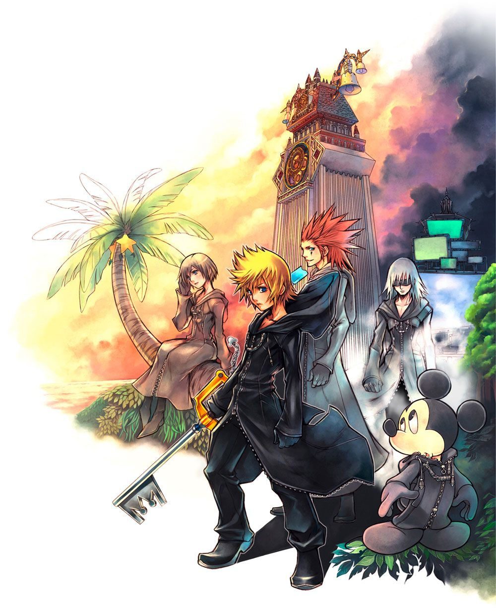
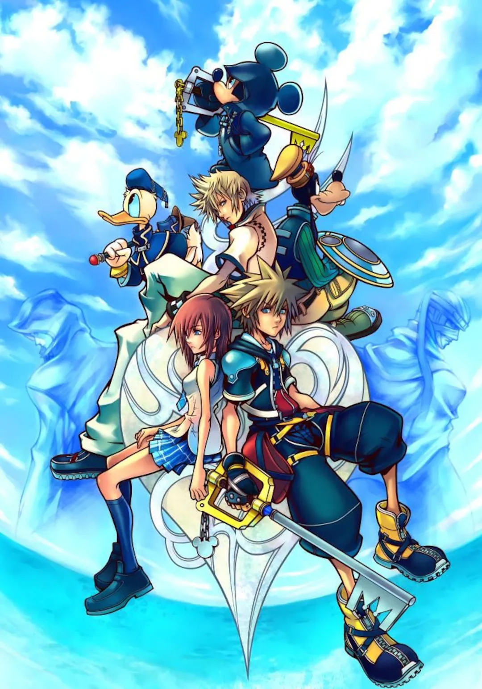

Kingdom Hearts is...






Kingdom Hearts is infamous for being a series of confusing, self-obsessed, time-consuming games, but what the average onlooker doesn’t know is that these games take all these blemishes in stride. A crossover between Final Fantasy and Disney is inherently silly, so the games must know exactly when to step away and wink at the player, making sure they’re in on the joke. The “pretentiousness” of the games makes for a remarkably resonant story, despite this inherent silliness. As for the length, these games use every second of their admittedly long runtimes wisely, deliberately making any grinding or backtracking optional, and rewarding everything a player might do.




